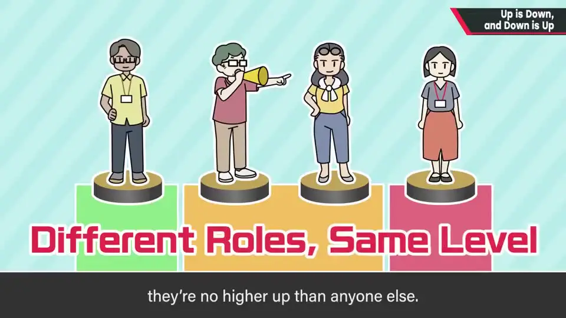
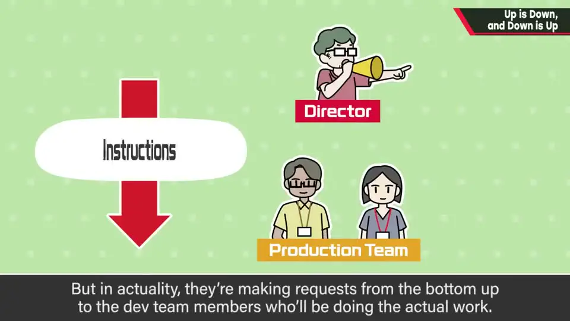
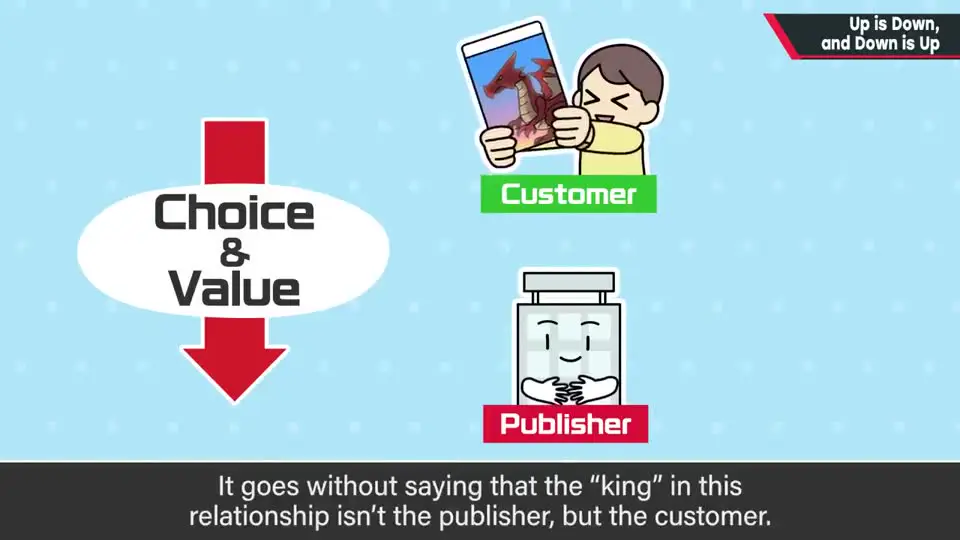
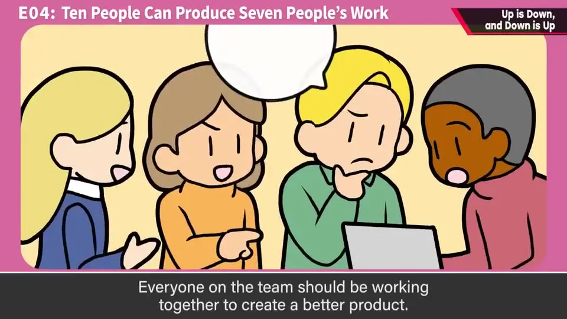
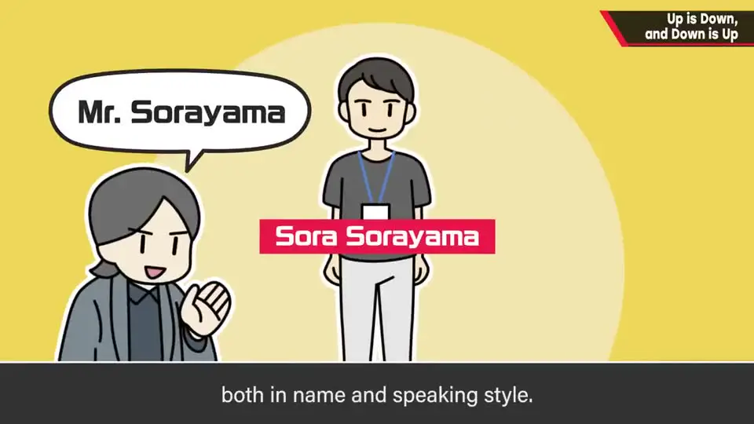
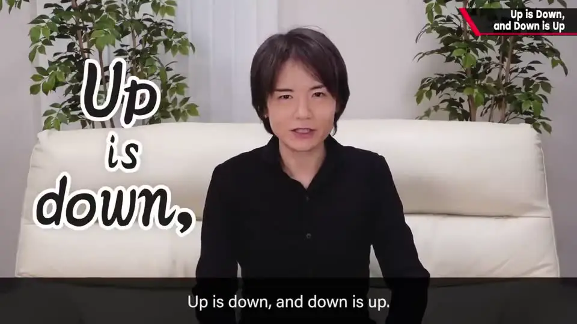

速览
这是樱井在专栏里也写过的心得。总监、制作人或领导在团队中决不比周围的员工「了不起」：只是处在请别人做事、把作品带到完成的位置上，高度和其他员工一样。提议「来做点什么」的人，没有他人的协助什么也做不成。在工作流程上总监确实是最上游、指示从上往下流，但实际上是请员工工作——从下往上。就像顾客与厂商：流通上顾客在下游，但在选择权和对价上是上游，王是顾客。同样受雇于公司的人之间没有上下，既不必傲慢也不必卑屈；无论立场如何，都要对周围的人保持敬意。团队成员都是伙伴，偶尔争执也不是敌人。樱井对团队成员基本都称「○○さん」并用礼貌语，对外的邮件也不会过分谦卑。领导和总监尤其要记住：上即是下，下即是上。（本集开头字幕提示：这是频道计划内的最后一期常规视频，之后还有特别终章。）
1. 领导并不比员工「更高」 0:11
这是樱井在专栏里也写过、认为很重要的心得：
- 总监、制作人或领导，在团队中决不比周围的员工了不起。
- 他们只是处在「请别人做事、把作品带到完成」的位置上，高度与其他员工相同。
- 反而是最先提议「来做点什么」的人，没有他人的协助什么也做不成。

2. 指示从上往下，请求从下往上 0:48

从工作流程看，总监确实在最上游，指示从上往下流。但实际上，是请员工为自己工作——从下往上。
用顾客与厂商的关系联想就很容易理解：不是厂商对顾客说「做好了，来买吧」，而是顾客「买给」厂商。流通上顾客在下游，但在选择权和对价上是上游——王当然是顾客。

3. 对周围的人保持敬意 1:33
- 同样受雇于公司，就有服从公司的义务；但在同样被雇用的人之间，没有上下。
- 不论是总监还是员工，都不必傲慢，也不必卑屈。
- 就算立场在上，傲慢的顾客也让人讨厌吧？无论立场如何，作为人都会被讨厌。所以不论上司还是团队核心，都需要对周围的人保持敬意。
- 团队里的人应该做的，是相互协作、追求更好的完成度。团队成员都是伙伴，偶尔争执也不是敌人。

4. 樱井的做法：称「○○さん」、用礼貌语 2:18

- 樱井基本上对名字加「さん」，并使用礼貌语——哪怕是年纪小、刚进来的新人。看到有人直呼新同事的名字，他会有点退缩。
- 反过来，对外的邮件他也不太用过分谦卑的表达，哪怕对方是任天堂的大人物。这在某种意义上也许失礼，但他觉得对方大概并不在意。

本集开头的画面字幕提示：这是该频道计划中的最后一期常规视频，之后还有一期特别终章。
自测题
1. 樱井认为总监/领导和员工是上下关系吗？
不是。领导只是处在请别人做事、把作品带到完成的位置，高度和其他员工一样；提议者没有他人协助什么也做不成。 0:22
2. 「上即是下，下即是上」用顾客与厂商的关系如何解释？
流通上顾客在下游，但在选择权和对价上是上游——不是厂商说「做好了来买」，而是顾客「买给」厂商，王是顾客。同理，指示从上往下，但实际是从下往上请员工工作。 1:04
3. 樱井在团队里如何称呼和对待成员？
基本都在名字后加「さん」，使用礼貌语，哪怕是年轻的新人；看到有人直呼新人名字会有点退缩。对外邮件则不会过分谦卑。 2:18